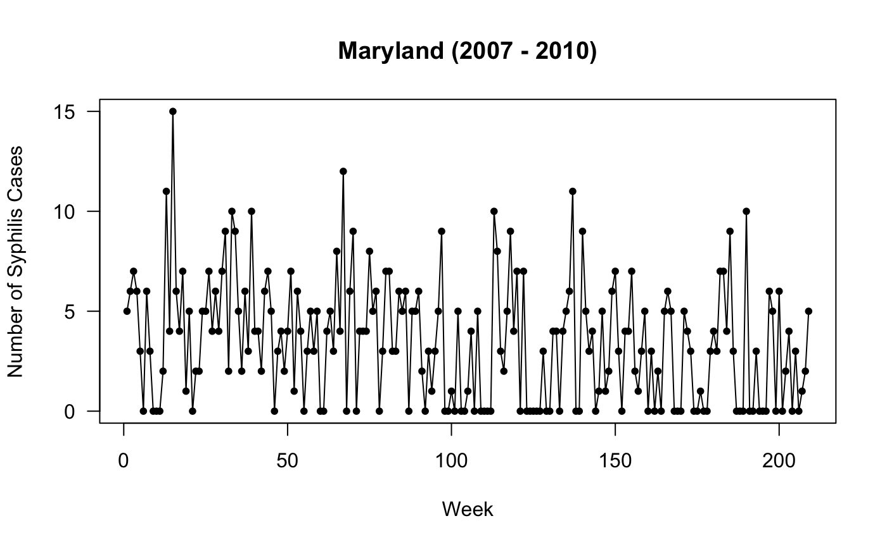

plot(ts(count), xlab = "Week", ylab = "Number of Syphilis Cases",
main = "Maryland (2007 - 2010)", type = "o", pch = 20, las = 1)
## count
## 0 1 2 3 4 5 6 7 8 9 10 11 12 15
## 59 10 14 24 26 26 18 14 3 7 4 2 1 1We first fit a ZIP autoregression with an AR(1) correlation structure. The linear trend is included in both the log-linear and logistic parts of the model.
##
## Call:
## zim(formula = count ~ ar1 + trend | trend)
##
## Coefficients (log-linear):
## Estimate Std. Error z value Pr(>|z|)
## (Intercept) 1.48942 0.11995 12.4175 < 2e-16 ***
## ar1 0.22111 0.10072 2.1954 0.02813 *
## trend -1.01004 0.66687 -1.5146 0.12987
##
## Coefficients (logistic):
## Estimate Std. Error z value Pr(>|z|)
## (Intercept) -1.93321 0.37196 -5.1974 2.021e-07 ***
## trend 8.60517 2.80827 3.0642 0.002182 **
## ---
## Signif. codes: 0 '***' 0.001 '**' 0.01 '*' 0.05 '.' 0.1 ' ' 1
##
## Test for overdispersion (H0: ZIP vs. H1: ZINB)
## score.test: 2.6031
## p.value: 0.0046196
##
## Criteria for assessing goodness of fit
## loglik: -454.3903
## aic: 918.7806
## bic: 935.4683
## tic: 920.7761
##
## Number of EM-NR iterations: 11
## Maximum absolute gradient: 2.975398e-14The EM-NR algorithm is used as the default algorithm in the zim function. The score test for overdispersion suggests that the ZINB model could provide a better fit to the syphilis data (p = 0.0046).
As suggested by the score test, we next fit a ZINB autoregression, with all the other components remaining the same as in the ZIP autoregression.
##
## Call:
## zim(formula = count ~ ar1 + trend | trend, dist = "zinb")
##
## Coefficients (log-linear):
## Estimate Std. Error z value Pr(>|z|)
## (Intercept) 1.47240 0.13873 10.6132 < 2e-16 ***
## ar1 0.23164 0.11522 2.0105 0.04438 *
## trend -1.00364 0.77154 -1.3008 0.19332
##
## Coefficients (logistic):
## Estimate Std. Error z value Pr(>|z|)
## (Intercept) -1.97940 0.38563 -5.1329 2.853e-07 ***
## trend 8.71684 2.88697 3.0194 0.002533 **
## ---
## Signif. codes: 0 '***' 0.001 '**' 0.01 '*' 0.05 '.' 0.1 ' ' 1
##
## (Dispersion parameter for negative binomial taken to be 15.4711)
##
## Criteria for assessing goodness of fit
## loglik: -451.7464
## aic: 915.4927
## bic: 935.5179
## tic: 915.974
##
## Number of EM-NR iterations: 11
## Maximum absolute gradient: 5.087792e-08The AIC and TIC suggest a marginal improvement when the ZINB autoregression is used. However, the BIC values for the ZIP and ZINB autoregressions are not distinguishable. This should not be surprising as BIC tends to penalize more for complexity.
We now fit a dynamic ZIP model to the syphilis data. The trend is included as a deterministic covariate in the log-linear model. The zero-inflation parameter is assumed to be constant over time.
## user system elapsed
## 108.142 4.950 113.218##
## Call:
## dzim(formula = count ~ trend, dist = "zip", N = 100, R = 100, niter = 50)
##
## (Zero-inflation parameter taken to be 0.2659)
##
## Coefficients (log-linear):
## Estimate Std. Error z value Pr(>|z|)
## (Intercept) 1.665769 0.083059 20.0553 < 2e-16 ***
## trend -1.509349 0.744136 -2.0283 0.04253 *
##
## Coefficients (autoregressive):
## Estimate Std. Error z value Pr(>|z|)
## ar1 -0.039305 0.706037 -0.0557 0.9556
## ---
## Signif. codes: 0 '***' 0.001 '**' 0.01 '*' 0.05 '.' 0.1 ' ' 1
##
## (Standard deviation parameter taken to be 0.2644)
##
## Criteria for assessing goodness of fit
## loglik: -461.031
## aic: 932.0621
## bic: 948.7737
## tic: 1172.527We next fit a dynamic ZINB model to see whether a need remains for the NB dispersion parameter.
## user system elapsed
## 114.224 5.110 119.482##
## Call:
## dzim(formula = count ~ trend, dist = "zinb", N = 100, R = 100, niter = 50)
##
## (Zero-inflation parameter taken to be 0.2666)
##
## (Dispersion parameter for negative binomial taken to be 28.7215)
##
## Coefficients (log-linear):
## Estimate Std. Error z value Pr(>|z|)
## (Intercept) 1.664849 0.085761 19.4126 < 2e-16 ***
## trend -1.417810 0.761383 -1.8622 0.06258 .
##
## Coefficients (autoregressive):
## Estimate Std. Error z value Pr(>|z|)
## ar1 -0.0067421 0.6117034 -0.011 0.9912
## ---
## Signif. codes: 0 '***' 0.001 '**' 0.01 '*' 0.05 '.' 0.1 ' ' 1
##
## (Standard deviation parameter taken to be 0.2163)
##
## Criteria for assessing goodness of fit
## loglik: -461.3512
## aic: 934.7024
## bic: 954.7564
## tic: 1248.151